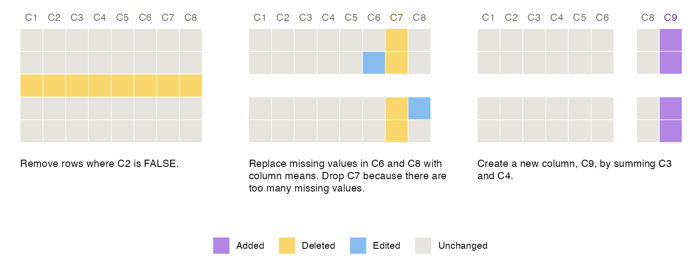
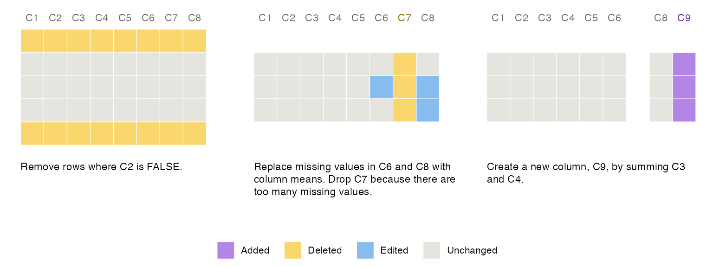
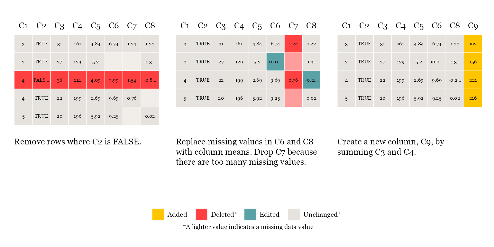
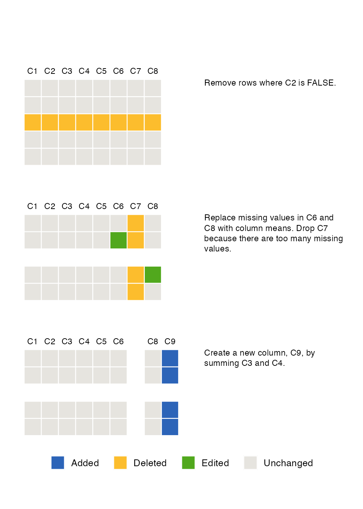

Smallset Timelines
In this vignette, we explain how to use smallsets to build Smallset Timelines. A Smallset Timeline (or Timeline) is a simple visualisation of data preprocessing decisions. More information on Timelines can be found in the Smallset Timeline paper and on YouTube.
Example dataset
In this vignette, we use the synthetic dataset s_data, which is
included in smallsets. It contains 100 observations and 8 variables
(C1-C8). See ?s_data for more information.
## C1 C2 C3 C4 C5 C6 C7 C8
## 1 2 TRUE 33 199 5.44 NA 0.99 NA
## 2 3 TRUE 31 161 4.84 6.74 1.24 1.22
## 3 4 FALSE 33 188 5.97 9.35 -0.04 0.59
## 4 2 FALSE 24 129 4.33 7.80 NA NA
## 5 2 TRUE 32 115 6.64 10.64 NA NA
## 6 3 TRUE 22 101 3.93 7.18 -1.12 -0.63Quick start example
Run this block of code to build a Smallset Timeline. In RStudio, the figure will appear in the plots pane.
library(smallsets)
set.seed(145)
Smallset_Timeline(data = s_data,
code = system.file("s_data_preprocess.R", package = "smallsets"))
Normally, you pass a character string to code
(e.g., “my_code.R” or “/…/…/my_code.R”). However, the script
s_data_preprocess.R is included in smallsets as an example and needs to
be called with system.file.
The basics
Each Smallset Timeline is constructed from your dataset and R/R
Markdown/Python/Jupyter Notebook data preprocessing script. Scripts must
contain a series of smallsets comments with
snapshot instructions. Your unprocessed dataset (data) and
commented preprocessing script (code) are the only required
inputs to Smallset_Timeline.
If s_data_preprocess.R was located in your working directory, the code would look like this.
Smallset_Timeline(data = s_data, code = "s_data_preprocess.R")Supported workflows
The smallsets package currently supports data preprocessing workflows fitting the following description.
- Your dataset is tabular and of class data.frame, data.table, or tibble. Objects of class data.table and tibble are immediately converted to a data.frame by smallsets.
- All preprocessing code is contained in one R, R Markdown, Python, or Jupyter Notebook file.
- The preprocessing code does not change the row names of the original data object as smallsets tracks rows by their names. Merges, joins, collapses, aggregations, and switches between the wide/long format generally involve writing over existing row names and are therefore generally not currently supported by smallsets. Renaming a column results in a column deletion then addition in the Timeline.
- All preprocessing package dependencies are loaded
in the current R session. Information on installing Python packages with
reticulatecan be found here.
Structured comments
To make a Smallset Timeline with smallsets, you need to add structured comments with snapshot instructions to your preprocessing script. All smallsets comments follow the same formula.
# smallsets snap + place + name of data object + caption[text]caption
Ex:
# smallsets snap +4 mydata caption[I removed rows that had implausible values.]caption
The following section includes an example R preprocessing script with smallsets structured comments.
place
There are three options for this argument.
- Specify the line of code that you would like the snapshot to be taken after, e.g., 17 means take the snapshot after the 17th line of code.
- Use a plus sign and a number to specify how many lines of code later to take the snapshot, e.g., +2 means take the snapshot two lines of code later.
- Don’t specify anything, and a snapshot will be taken directly after the structured comment (i.e., before the next line of code).
R example
This is the example R preprocessing script. It demonstrates how to
add smallsets structured comments to a preprocessing script. Based on
these comment place arguments (empty, +2, and
+1), snapshots will be taken after line 1, line 7, and line
12.
s_data_preprocess.R (Don’t run this code block. It’s an example preprocessing script.)
# smallsets snap s_data caption[Remove rows where C2 is FALSE.]caption
s_data <- s_data[s_data$C2 == TRUE,]
# smallsets snap +2 s_data caption[Replace missing values in C6 and C8 with
# column means. Drop C7 because there are too many missing values.]caption
s_data$C6[is.na(s_data$C6)] <- mean(s_data$C6, na.rm = TRUE)
s_data$C8[is.na(s_data$C8)] <- mean(s_data$C8, na.rm = TRUE)
s_data$C7 <- NULL
# smallsets snap +1 s_data caption[Create a new column, C9, by summing C3 and
# C4.]caption
s_data$C9 <- s_data$C3 + s_data$C4Alternative comment placement
Alternatively, you could place smallsets comments as a block above the preprocessing code, and specify in the place argument the line of code after which you would like each snapshot to be taken. This comment set-up produces the same Smallset Timeline as the comment set-up in the R script above.
s_data_preprocess_block.R (Don’t run this code block. It’s an example preprocessing script.)
# smallsets snap 7 s_data caption[Remove rows where C2 is FALSE.]caption
# smallsets snap 12 s_data caption[Replace missing values in C6 and C8 with
# column means. Drop C7 because there are too many missing values.]caption
# smallsets snap 16 s_data caption[Create a new column, C9, by summing C3 and
# C4.]caption
# remove rows where C2 is false
s_data <- s_data[s_data$C2 == TRUE,]
# deal with missing data
s_data$C6[is.na(s_data$C6)] <- mean(s_data$C6, na.rm = TRUE)
s_data$C8[is.na(s_data$C8)] <- mean(s_data$C8, na.rm = TRUE)
s_data$C7 <- NULL
# create a new variable
s_data$C9 <- s_data$C3 + s_data$C4R Markdown example
Smallset Timelines can be built for preprocessing code in R Markdown
files. If you choose to include the Smallset Timeline as a figure within
the R Markdown report itself, it works best to build the Smallset
Timeline before the preprocessing code is executed, so that you don’t
have to reload your (un-preprocessed) data later to build the Smallset
Timeline. You assign the Smallset Timeline figure to an object and hide
that code with echo=FALSE. You can then plot that object
anywhere in the report.
Smallset_Timeline(data = s_data,
code = system.file("s_data_preprocess.Rmd", package = "smallsets"))To see the compiled R Markdown report, which includes a Smallset Timeline figure, run the following code. It will write a PDF titled s_data_preprocess.pdf to your working directory.
rmarkdown::render(system.file("s_data_preprocess.Rmd", package = "smallsets"),
output_dir = getwd())The example R Markdown file can be viewed here.
Python example
Python scripts can be passed to the R command
Smallset_Timeline.
Smallset_Timeline(data = s_data,
code = system.file("s_data_preprocess.py", package = "smallsets"))Below is the script s_data_preprocess.py, which does the same thing as s_data_preprocess.R. The smallsets commenting system is the same in Python.
s_data_preprocess.py (Don’t run this code block. It’s an example preprocessing script.)
# smallsets snap s_data caption[Remove rows where C2
# is FALSE.]caption
s_data = s_data[s_data["C2"] == True]
# smallsets snap 9 s_data caption[Replace missing values in C6 and
# C8 with column means. Drop C7 because there are too many
# missing values.]caption
s_data["C6"].fillna(value = s_data["C6"].mean(), inplace = True)
s_data["C8"].fillna(value = s_data["C8"].mean(), inplace = True)
s_data = s_data.drop(columns = ["C7"])
# smallsets snap +1 s_data caption[Create a new column,
# C9, by summing C3 and C4.]caption
s_data["C9"] = s_data["C3"] + s_data["C4"]Jupyter Notebook example
Jupyter Notebooks can be passed to the R command
Smallset_Timeline.
Smallset_Timeline(data = s_data,
code = system.file("s_data_preprocess.ipynb", package = "smallsets"))The example Jupyter Notebook can be viewed here.
Run smallsets in a Jupyter Notebook
If you want to execute smallsets in a Jupyter Notebook, you can do so using Rmagic.
After starting Rmagic, run smallsets in a %%R magic
cell.
Smallset selection
A Smallset is a small set of rows (5-15) from the original dataset
containing instances of data preprocessing changes. For Smallset
selection, there are two decisions to make: 1) how many rows
(rowCount) and 2) which automated selection method to use
(rowSelect).
If rowSelect = NULL (the default setting), rows are
selected through a simple random sample. The following code would
randomly sample seven rows for the Smallset.
Smallset_Timeline(data = s_data,
code = system.file("s_data_preprocess.R", package = "smallsets"),
rowCount = 7, rowSelect = NULL)To use the other two selection methods, which are optimisation
problems proposed here,
you will need a Gurobi license as
they rely on the Gurobi
solver v9.1.2 (free academic licenses are available). Richard
Schuster’s “Gurobi
installation guide” in the prioritizr package provides
step-by-step instructions on installing Gurobi in R.
If rowSelect = 1, the coverage problem is used
to select rows. For each snapshot, it finds at least one example of a
data change, if there is one. You can return the solution to the console
with rowReturn = TRUE.
Smallset_Timeline(data = s_data,
code = system.file("s_data_preprocess.R", package = "smallsets"),
rowCount = 5, rowSelect = 1, rowReturn = TRUE)## Smallset rows: 27, 42, 95, 96, 99After the optimisation problem is solved once, the solution can be
passed to rowNums to avoid having to re-solve it with each
run of Smallset_Timeline.
Smallset_Timeline(data = s_data,
code = system.file("s_data_preprocess.R", package = "smallsets"),
rowCount = 5, rowNums = c(27, 42, 95, 96, 99))
Here, the coverage solution misses a data edit example in
the second snapshot, motivating use of the other selection method
(rowSelect = 2): the coverage + variety
optimisation problem, which looks for rows affected by the preprocessing
steps differently. The drawback of rowSelect = 2 is
runtime for large datasets. One potential workaround to a long
runtime is building a Timeline from a sample of the dataset. However,
this should be done with caution.
Smallset_Timeline(data = s_data,
code = system.file("s_data_preprocess.R", package = "smallsets"),
rowSelect = 2, rowReturn = T)## Smallset rows: 3, 32, 80, 97, 99
Timeline customisation
There are built-in options to customise a Timeline. The examples in
this section highlight some of them. See ?Smallset_Timeline
for a full list of options.
Example 1
Differences: custom colour palette, data in the snapshots, highlighting missing data, no ghost data, font, colour of column names.
set.seed(145)
Smallset_Timeline(
data = s_data,
code = system.file("s_data_preprocess.R", package = "smallsets"),
colours = list(added = "#FFC500",
deleted = "#FF4040",
edited = "#5BA2A6",
unchanged = "#E6E3DF"),
printedData = TRUE,
truncateData = 4,
missingDataTints = TRUE,
ghostData = FALSE,
font = "Georgia",
sizing = sets_sizing(data = 2, captions = 3.5, columns = 3.5),
labelling = sets_labelling(labelCol = "darker", labelColDif = 1),
spacing = sets_spacing(captions = 3)
)
Example 2
Differences: vertical alignment, use of the second built-in colour palette, colour of column names.
set.seed(145)
Smallset_Timeline(
data = s_data,
code = system.file("s_data_preprocess.R", package = "smallsets"),
align = "vertical",
colours = 2,
spacing = sets_spacing(captions = 8, header = 2.5),
labelling = sets_labelling(labelColDif = 1),
sizing = sets_sizing(tiles = .4, captions = 3, columns = 3, legend = 12)
)
Example 3
Differences: four snapshots, larger Smallset, use of the third built-in colour palette, two rows, rotated column names, font.
set.seed(145)
Smallset_Timeline(
data = s_data,
code = system.file("s_data_preprocess_4.R", package = "smallsets"),
rowCount = 8,
colours = 3,
ghostData = TRUE,
missingDataTints = TRUE,
font = "serif",
spacing = sets_spacing(
captions = 3,
rows = 2,
degree = 60,
header = 1.5
),
sizing = sets_sizing(
legend = 12,
captions = 4,
columns = 4
)
)
Alternative text (alt text)
You can retrieve alternative text (alt text) for your Smallset
Timeline. When altText = TRUE, a draft of alt text is
printed to the console. It can be copied from the console, revised for
readability, and included with the figure.
set.seed(145)
Smallset_Timeline(data = s_data,
code = system.file("s_data_preprocess.R", package = "smallsets"),
altText = TRUE)The Smallset Timeline contains 3 Smallset snapshots. Data edits are represented with the colour skyblue2. Data additions are represented with the colour mediumpurple2. Data deletions are represented with the colour lightgoldenrod2. Snapshot 1 is 5 rows by 8 columns. The columns, in order from left to right, are: C1, C2, C3, C4, C5, C6, C7, and C8. 1 row is lightgoldenrod2. The caption is quote Remove rows where C2 is FALSE. unquote. Snapshot 2 is 4 rows by 8 columns. Column C7 is lightgoldenrod2. 3 cells are skyblue2. The caption is quote Replace missing values in C6 and C8 with column means. Drop C7 because there are too many missing values. unquote. Snapshot 3 is 4 rows by 8 columns. Column C9 is mediumpurple2. The caption is quote Create a new column, C9, by summing C3 and C4. unquote.Resume markers
A resume marker is a vertical line between snapshots signalling that preprocessing stopped to run an analysis and then resumed to facilitate a new/revised analysis. It is added to a Timeline with a resume instruction in a structured comment.
In this example, we resume data preprocessing to transform C9 into a categorical variable.
s_data_preprocess_resume.R (Don’t run this code block. It’s an example preprocessing script.)
# smallsets snap s_data caption[Remove rows where C2
# is FALSE.]caption
s_data <- s_data[s_data$C2 == TRUE,]
# smallsets snap 9 s_data caption[Replace missing values in C6 and
# C8 with column means. Drop C7 because there are too many
# missing values.]caption
s_data$C6[is.na(s_data$C6)] <- mean(s_data$C6, na.rm = TRUE)
s_data$C8[is.na(s_data$C8)] <- mean(s_data$C8, na.rm = TRUE)
s_data$C7 <- NULL
# smallsets snap +1 s_data caption[Create a new column,
# C9, by summing C3 and C4.]caption
s_data$C9 <- s_data$C3 + s_data$C4
# smallsets resume s_data caption[Ran the analysis
# and decided to make a change.]caption
# smallsets snap 27 s_data caption[Create a new categorical
# column, C10, based on C9 terciles.]caption
t <- quantile(s_data$C9, c(0:3 / 3))
s_data$C10 = with(s_data, cut(
C9,
t,
include.lowest = T,
labels = c("Low", "Med", "High")
))
set.seed(145)
Smallset_Timeline(data = s_data,
code = system.file("s_data_preprocess_resume.R", package = "smallsets"),
sizing = sets_sizing(
columns = 1.8,
captions = 1.8,
legend = 7,
icons = .8
),
spacing = sets_spacing(
captions = 3,
degree = 45,
header = 3.5,
right = 2
)
)